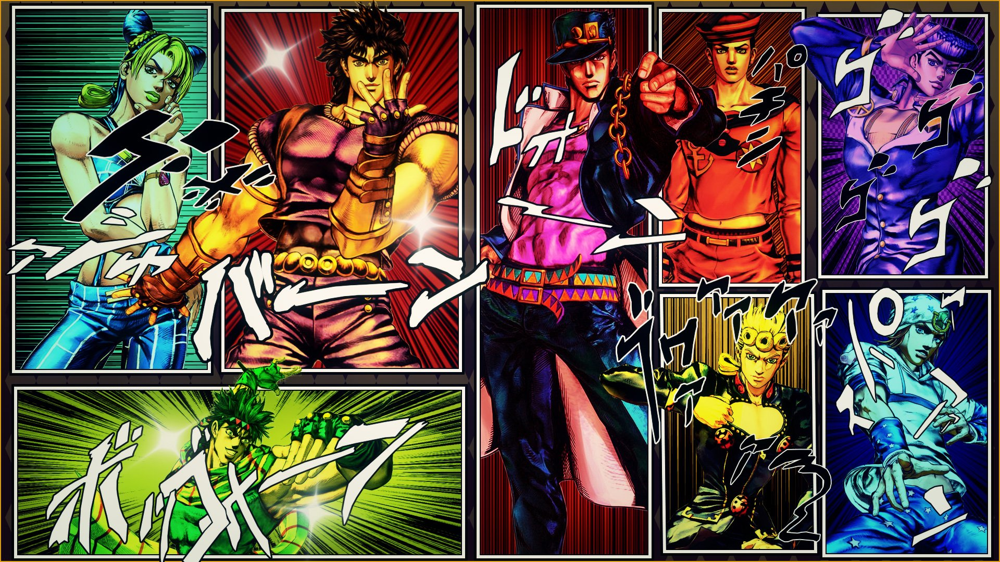

JoJo's Bizarre Adventure
Jojo's Bizarre Adventure (ジョジョの奇妙な冒険, Jojo no Kimyō na Bōken) (frequentemente abreviado como JoJo ou como JJBA) é um mangá shōnen e seinen escrito e ilustrado por Hirohiko Araki, e o assunto principal desta wiki.
Perfil da série
JoJo foi serializado na Weekly Shōnen Jump de 1987 até 2004, quando foi transferido para a revista mensal seinen Ultra Jump, onde a história continua.
A série tem mais de 100 milhões de cópias impressas, fazendo-a uma das séries de mangá mais vendidas da história. Preenchendo mais de 120 volumes, é a segunda maior série de mangá da Shueisha. Publicações em outros idiomas ainda estão sendo feitas.
Os gêneros de JoJo incluem Ação, Aventura, Sobrenatural, Thriller, Comédia, Tragédia, Mistério, e Terror. É talvez mais popularmente conhecido pelo seu fenômeno de Stand; o arco Stardust Crusaders e seus personagens Dio Brando/DIO e Jotaro Kujo; a rendição expressiva de suas personalidades orgulhosas e glamorosas; e suas centenas de referências à música popular do oeste.
Adicionando ao cânon de JoJo, Hirohiko Araki autorizou vários spin-offs e artbooks relacionados; e várias light novels já foram produzidas também, todas contendo suas ilustrações.
JoJo anteriormente foi a série de mangá mais longa da Shueisha que não recebeu uma adaptação animada para televisão. Porém, a série de anime de TV oficial finamente estreou em 6 de outubro de 2012 (separando as estreias do mangá e do anime por 25 anos); animada pelo estúdio de animação David Production.
Seu alcance de outras mercadorias incluem várias adaptações em videogames, incluindo três jogos de luta de lançamento internacional; Heritage for the Future pela Capcom (na placa CPS-3) em 1998; All Star Battle pela Bandai Namcom Games para o PS3 em 2014; e Eyes of Heaven para o PS4 em 2016.
Resumo
A história de JoJo's Bizarre Adventure é dividida em duas continuidades. A primeira inclui as Partes 1 a 6, publicadas na Weekly Shonen Jump de 1987 a 2003, enquanto a segunda inclui as Partes 7, 8, e 9, publicadas na revista seinen Ultra Jump de 2004 até agora. O enredo dessas histórias é fornecido em arcos de vários capítulos detalhando conflitos perigosos e melodramáticos entre partes definidas por poderes sobrenaturais únicos, principalmente pelo versátil fenômeno de Stand, e ambições, atitudes ou padrões morais exclusivos. Esses arcos são diferentes em tom, alternando aventura, suspense, mistério, e terror; sempre por meio de ação, e com comédia frequente. Tipicamente, uma raça emerge entre os heróis de uma história para impedir um antagonista poderoso central.
Muitas referências a filmes, televisão, moda, arte e música popular são facilmente identificáveis em JoJo em vários temas, e também a caracterização e nomenclatura do elenco. Exemplos de teoria física, matemática e psicológica, biologia, tecnologia, mitologia, fenômenos naturais, eventos históricos, e segmentos de outras obras artísticas informam o design e funcionalidade da multidão de Stands únicos. A série ocasionalmente faz desenvolvimentos fantasioso sobre teoria científica contemporânea na criação das rotas, pelas quais certos Stands e outros poderes exercem sua influência sobre a natureza.
Morioh, a cidade japonesa fictícia e base de Diamond is Unbreakable e como uma encarnação distinta em JoJolion, compartilha suas coordenadas com a cidade natal de Araki, Sendai,[5] tendo uma descrição mais culturalmente detalhada e referenciando tópicos mais contemporâneos (como o terremoto Tohoku de 2011) do que outros temas. Adicionalmente, o mangaká usuário de Stand Rohan Kishibe, um morador de Morioh apresentado em Diamond is Unbreakable, retorna em vários spin-offs de JoJo, como Thus Spoke Rohan Kishibe.
Hirohiko Araki, pedido em 2006 para descrever o assunto de JoJo em uma frase, respondeu "o enigma de seres humanos" e "um elogio ao humano";[6] e como sua atitude a mangá, "a salvação do coração".[7] Assuntos no texto do mangá podem ser condensados sob temas de Destino, Coragem e Justiça.